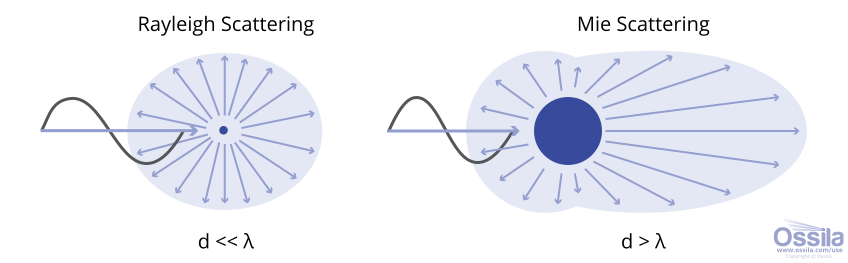
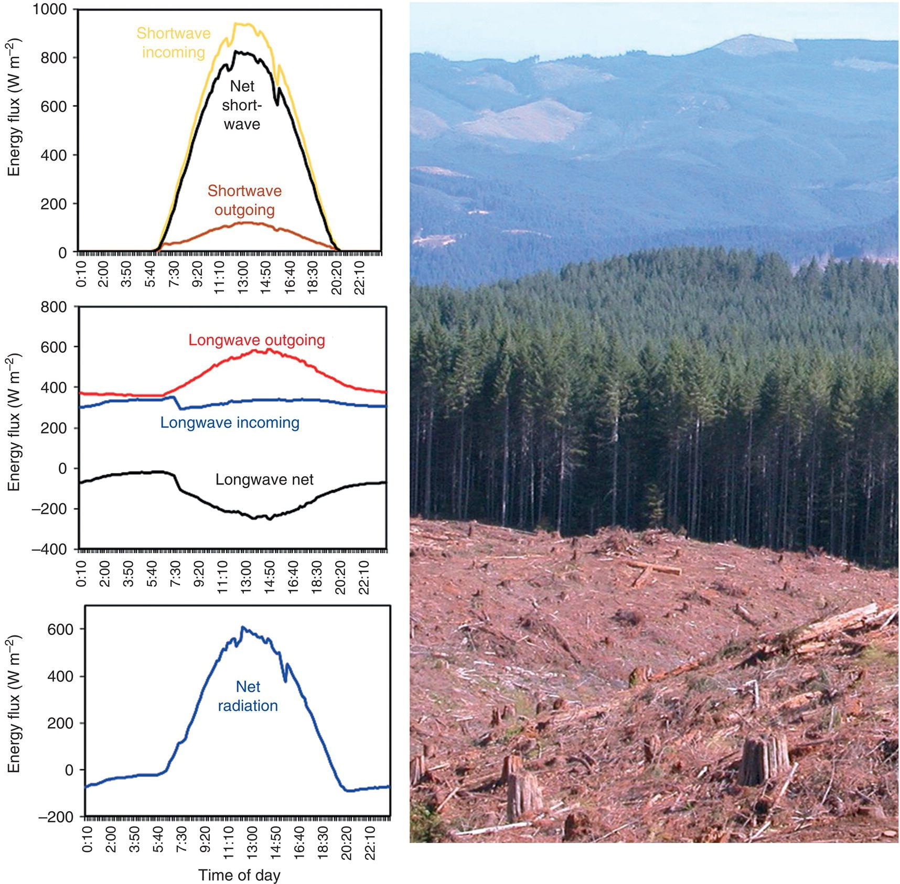
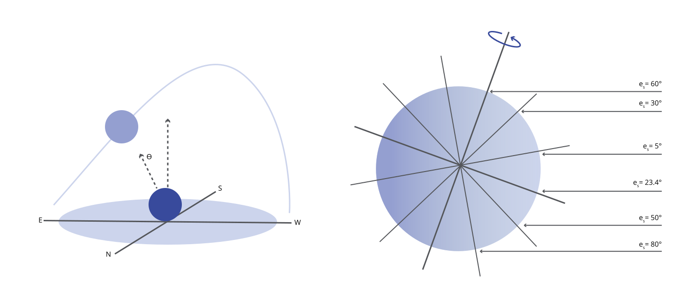
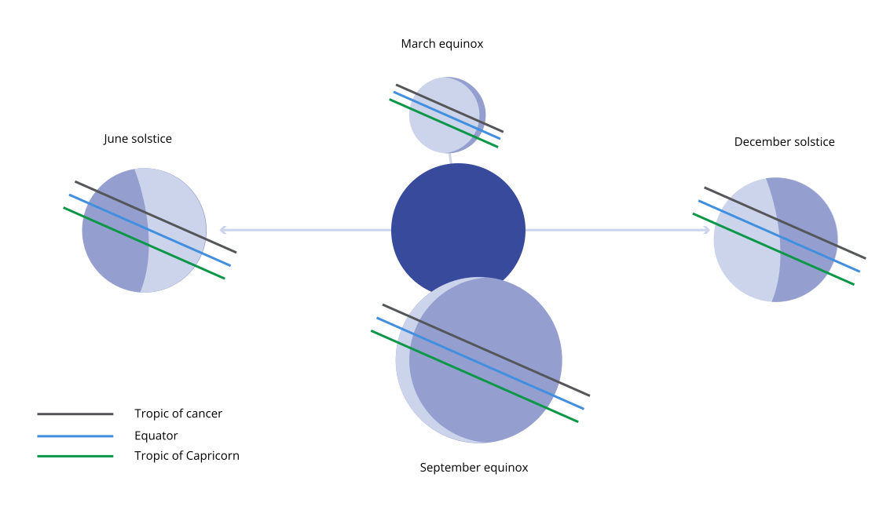
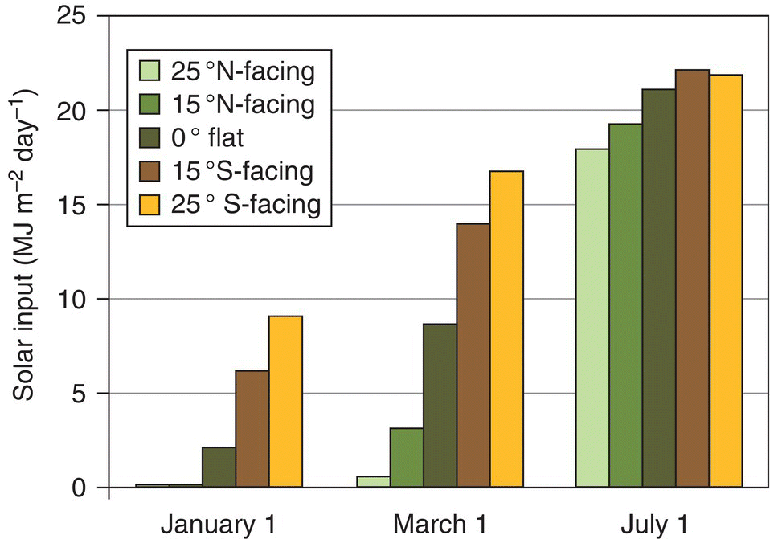
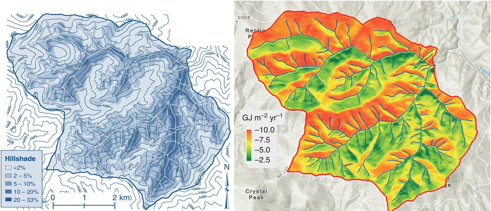
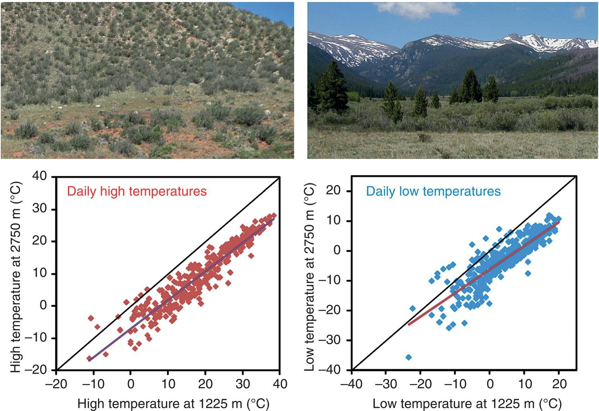

Sustainable Forest Environment (SFE)
Lecture 5: Forest Environment(Last update: 8 May 2025)
Learning objectives
- Effect of physical environment on the forest development
- Temperature, water regime, and solar radiation
Heat loss in leaves
The leaf can also lose its thermal energy by following mechanisms.
- When the leaves are exposed to cooler air.
- The leaf can lose thermal energy by evaporating water (controlled through stomata). This is because evaporation of water is an endothermic process. The leaves use their thermal energy to heat water and convert them liquid into vapour.
- The leaves can also lose energy by emitting radiant energy.
Heat loss in leaves due to cooler air
- When cool air pass over the leaves, the thermal energy is transferred to the air trough conduction and convection mechanisms.
- The rate of energy transfer (by conduction) into the air depends on the gradient of temperature between the leaf and the air.
- The rate of heat transfer also depends upon the surface area of the leaves which are in contact with the air.
Heat loss in leaves due to cooler air
Leuzinger and Körner (2007) showed that forest canopies play a major role in biosphere-atmosphere interactions.
Large surfaces, such as beech leaves, have stable layers of air moleculs comprising a thick boundary layer. This thick boundary layer slow down the energy transfer from leaves to air at large.
Small surfaces have thinner boundary layers. They allow fater transfer of thermal energy between leaves and air.
The thickness of boundary layer decreases with increase in wind speed.
Heat loss in leaves due to evaporation
- The evaporation of water requiresa huge amount of energy; to evaporate 1 liter of water we need to supply 2.4 MJ of energy.
- The faster the rate of evaporation faster will be the rate of energy loss (i.e., cooling)
- The rate of evaporation, however, depends upon several factors such as:
- amount of water available in the tree
- dryness of air (temperatue and humidity of air)
- wind pressure, speed, and thickness of boundary layer
Heat loss due to radiation
- Earlier, it was mentioned that the leaves can loose energy by emitting radiation.
- Thermal radiation is the emission of electromagnetic waves from all matter that has non zero absolute temperature.
- The energy is emitted in the form of photons and does not require a medium for propagation.
- Thermal radiation is also called as black body radiation.
Black body radiation (thermal radiation)
Thermal radiation is also called as black body radiation.
- A ‘black-body’ is a theoretical object in thermal equilibrium that absorbs all light that is incident upon it.
- Black-bodies have a single, well-defined temperature.
- The surface of the sun is a good approximation of these requirements.
- Black-body objects emit electromagnetic radiation. The spectrum of this radiation depends solely on the temperature of the object, as described by Planck’s Law.
What is the meaning of spectrum?
Spectra of Electromagnetic radiation

Spectrum of electromagnetic radiation, UV: 10 nm to 400 nm; Visible: 380 nm to 780 nm; Infrared: 780 nm to 1 mm
Spectra of Visible light
| Violet |
380 – 450 |
| Blue |
450 – 495 |
| Green |
495 – 570 |
| Yellow |
570 – 590 |
| Orange |
590 – 620 |
| Red |
620 – 750 |
Spectra of black body radiation
As the temperature of a black body decreases, the emitted thermal radiation decreases in intensity and its maximum moves to longer wavelengths.

As the temperature of a black body decreases, the emitted thermal radiation decreases in intensity and its maximum moves to longer wavelengths.
Spectra of black body radiation
Black-body radiation has a continuous frequency spectrum that depends only on the body’s temperature (Planck’s law).

Black-body radiation has a continuous frequency spectrum that depends only on the body’s temperature (Planck’s law).
Spectra of black body radiation
The spectrum has a peak at a characteristic frequency that shifts to higher frequencies with increasing temperature.

The spectrum has a peak at a characteristic frequency that shifts to higher frequencies with increasing temperature
Spectra of black body radiation
- At room temperature most of the emission is in the infrared region.
- As the temperature increases past about 500 degrees Celsius, black bodies start to emit significant amounts of visible light.
- With rising temperature, the glow becomes visible: first as a dull red, then yellow, and eventually a “dazzling bluish-white” as the temperature rises.
- When the body appears white, it is emitting a substantial fraction of its energy as ultraviolet radiation.
Spectra of solar radiation

Solar irradiance spectral distribution vs. black-body spectral distribution at 5800 K. The solar spectrum is the range of electromagnetic radiation emitted by the sun, extending from the ultraviolet to the infrared region.
The Sun, with an effective temperature of approximately 5800 K, is an approximate black body with an emission spectrum peaked in the central, yellow-green part of the visible spectrum, but with significant power in the ultraviolet as well.
Heat loss due to radiation
- The instensity of thermal radiation emitted by an object is given by Stefan-Boltzmann law:
\[
j = \varepsilon \sigma T^{4}
\]
where,
- \(j\) is the intensity of the thermal radiation (energy per unit area per unit time)
- \(\varepsilon\) is the emissivity, which is a material property
- \(\sigma\) is the Stefan-Boltzmann constant (\(5.67 \times 10^{-8} W m^{-2} K^{-4}\))
- T is absolute temperatue in Kelvin.
- For a perfect black body, emissivity is 1. Many bodies in real life are grey bodies with \(\varepsilon \in (0,1)\).
- A good absorber is also a good emitter.
Grey bodies
- Matter that does not absorb all incident radiation emits less total energy than a black body.
- Emissions are reduced by a factor \(\varepsilon \in (0,1)\)
- In general emissivity depends on wavelength
- For grey body, emissivity is constant and does not depend upon the wave length.
Heat loss due to radiation
- So Stefan-Boltzmann law states that a body which has non zero absolute temperature emits thermal radiation.
- Thermal radiation emitted by a body at any temperature consists of a wide range of frequencies.
- When hotter body (temperature \(T\)) is kept in a cooler environment (temperature \(T_{0}\)), then the hotter body will emit energy, and it will also absorb energy from cooler environment. The net power per unit area emitted by the hotter body is given by following expression.
\[
j = \varepsilon \sigma (T^{4} - T_{0}^{4})
\]
The dominant frequency (or color) range of the emitted radiation shifts to higher frequencies as the temperature of the emitter increases.
Solar radiation
- Solar radiation is the direct emission of energy from the sun
- Solar irradiance is the amount of energy that reaches the Earth’s surface.
- The thermal radiation emitted by the sun is called “shortwave” radiation, because of the short wavelengths (visible portion of the specturm).
- UV: 10 to 400 nm; Visible: 380 - 780 nm; Infrared : 780 nm - 1 mm
Heat loss due to radiation

Visible image of the forest canopy, source: Still et al. (2021)
- The cooler bodies emits radiation of larger wavelengths. If these wavelengths belong to visible spectrum then we can see those bodies. Interesting article on spectrum of various light source
- However, if the wavelengths are larger than the visible spectrum then we cannot see those bodies, and we need Infrared imaging (Thermography). See the video on using Thermography to study forest canopy
- Objects at temperature commonly found in forest emit radiation at longer wavelengths (on order of 10 micrometers) which is in the infrared region of the spectrum. This is called Longwave radiation which can be sensed by skin as warmth.
Heat loss due to radiation
- An object at room temperature (20 degree celcius) emits about 420 W/m2 energy .
- If we increase the temperature to 37 degree celcius then it will emit 520 W/m2 energy.
- The loss of energy due to radiation cools the objects, which in turn, lowers the rate of further radiation. The energy loss may be counteracted by any energy being added to the surface from the environment, and temperature stabilize when the energy gains from the environment matches the energy losses.
Earth’s energy balance

Earth’s energy balance Source NOAA
Earth’s energy balance

Earth’s energy balance
Solar Irradiance
- The atmosphere is a particularly important factor in determining local terrestrial solar irradiance as it causes significant changes between the radiation at the top of the atmosphere and what reaches the ground.
- Certain wavelengths are preferentially absorbed or scattered by atoms/molecules in the air.
- Absorption is the process whereby a photon of light transfers all its energy to an atom/molecule. It does this by promoting an electron to a higher energy level, such that the photon no longer exists. Consequently, its energy is effectively converted to heating the absorber (sometimes a photon can be remitted in a process called fluorescence, but this is rare in the atmosphere).
Solar Irradiance
- At ultraviolet wavelengths below 400 nm, O3 (ozone) is the primary absorber of radiation. Molecules in the atmosphere scatter incoming solar radiation into random directions. This is known as Rayleigh scattering and is responsible for the reduction in irradiance throughout the visible part of the spectrum.
- Molecular oxygen (O2) is responsible for some absorption of light in the red and near infrared region (600 nm – 800 nm), as is water vapour (H2O), which also has strong absorption bands for light in the mid-infrared region up to 3000 nm.
- Carbon dioxide (CO2) begins to contribute to absorption of light above approximately 2500 nm.
Solar Irradiance
Scattering of light
- Atmospheric constituents can also scatter sunlight. Here, the photons are deflected from their original trajectory by molecules/particles rather than being absorbed. The two types of scattering that are most prevalent in the atmosphere are Mie scattering and Rayleigh scattering. Both are types of elastic scattering, so the wavelength (λ) of light is unchanged by the scattering process.
Solar Irradiance
Scattering of light
Rayleigh scattering occurs when the diameter (d) of the scatterer is much smaller than the wavelength of the light it is scattering. The intensity of Rayleigh scattering is proportional to λ-4, so it is far more efficient for short wavelengths (blue light) than long wavelengths (red/IR light). Rayleigh scattering can scatter light in all directions, with a slight prevalence to the forward and backward directions relative to the incoming light.
Gas molecules such as oxygen and nitrogen along with very small dust particles are largely responsible for Rayleigh scattering. This occurs mostly in the upper atmosphere. The preferential scattering of blue light by Rayleigh scattering is why the sky appears blue during the day and red at sunrise/sunset. Rayleigh scattering is also largely responsible for diffuse horizontal irradiance.
Solar Irradiance
Scattering of light
- Mie scattering occurs when the diameter of the scatterer is equal to or larger than the wavelength of light. It preferentially scatters light in the forward direction, with larger particles scattering more heavily in favour of the forward direction. The intensity of Mie scattering is not heavily wavelength dependent. It occurs mostly in the lower atmosphere from water vapour and large dust particles/pollutants. Mie scattering is why clouds and fog appear white.
Energy balance in forest ecosystem

Source Still et al. (2021)
Forest receive shortwave sunlight and emit longwave radiation
Energy balance in forest ecosystem
Radiation patterns for a clearcut forest in Oregon, USA on a summer day; Source: Forest Ecology, An evidence based approach
Energy balance in forest ecosystem
- The energy budget for a forest clearcut on a summer day is driven by incoming solar (shortwave) radiation.
- About 13% of the light is reflected, with no effect on the forest.
- The rest of the solar energy is either absorbed by the forest (warming it), or evaporating water.
Energy balance in forest ecosystem
- The forest itself emits at long wavelengths, and the intensity of the emission depends on the daily trends in temperature.
- The warm air also emits longwave radiation to the forest, about 300 W/m2 through the day and night.
- The emission of longwave radiation from the forest increased by about 50% through the day, as absorption of shortwave solar radiation increased the thermal energy stored in the forest.
Energy balance in forest ecosystem
- The balance between incoming and outgoing fluxes of shortwave and longwave radiation determines how much energy is available to evaporate water or change the thermal energy storage.
- In a day, the soil gains about 14 MJ/m2 of energy. This energy can move deep into the soil, or be used to evaporate water (14 MJ/m2 of energy can evaporate about 5 liters of water).
Forest help in maintaining soil temperature

The temperature of the air in the forest in nothern Arizona, USA on a winter night
The temperature of the air in the forest remained above −15 °C on a winter’s night, compared with −30 °C in the meadow. WHY?
Forest help in maintaining soil temperature
- If we keep two black bodies at the same temperature, then the radiation emitted by both bodies will be same.
- However, most real objects are not perfect black bodies. They emit lesser radiation than they absorb.
- Soils and plants are almost perfect black bodies, they can emit 90% of the maximum radiation.
- Air is poor emitter, especially if humidity is high, emitting only 70% of the maximum radiation.
- This means that, at the same temperature, the soil will emit more radiation to air than the air will emit to the soil. This phenomena will lead to chilling of the soil.
- The presence of trees can increase the turbulence in the air. This will prevent the formation of a very cool layer of air in contact with the soil.
Solar Spectrum
- Solar radiation is the direct emission of energy from the sun while solar irradiance is the amount of energy that reaches the Earth’s surface.
- The intensity of the solar spectrum received on Earth is strongly dependent on the Earth-Sun distance, the angle at which the sun’s rays reach the Earth’s atmosphere, the weather, and the amount of air pollution.
Solar radiation
- The average distance between the Earth and the Sun is approximately 150 million kilometres.
- This means that rays of sunlight are approximately parallel when they arrive at Earth.
- However, the amount of solar radiation which reaches Earth varies based on the time of year.
- This is due to variations in the Earth-Sun distance, which varies between approximately 147 million km at perihelion in January to 152 million km at aphelion in July.
Tilt of the earth
Tilt of the earth
- The Earth is tilted at an angle of 23.5 degrees relative to the plane of its orbit around the Sun.
- The angle at which the light intercepts the atmosphere is the governing factor in the irradiance at the top of the atmosphere. This angle is called the solar zenith angle, \(\theta_{s}\) and is the angle between the sun’s rays and local vertical.
- Due to the spherical shape of the Earth, the greater \(\theta_{s}\), the larger the area that the sun’s rays are spread over.
Tilt of the earth
The latitude, which receives sunlight at normal incidence, and hence the greatest intensity, varies depending on the time of year
Effect of slope on solar radiation
The daily amount of incoming sunlight depends on the aspect of a site. In the Northern Hemisphere at a latitude of 43°, a hillside that faces toward the north at an angle of 25° receives almost no direct‐beam sunlight in winter, when a 25° hillside facing to the south receives 9 MJ m−2. The effect of aspect is small in mid‐summer.
The amount of incoming radiation received by a site depends not only on latitude, slope angle and aspect, but also on whether nearby hillsides block sunlight (left). The shading effects in a mountainous landscape in northern Idaho reduces incoming sunlight by only a few percent on south‐facing slopes, but by an average of 30% on north‐facing slopes. The effect of slope combined with shading from surrounding hills resulted in a fourfold range of incoming solar radiation annually
Daily comparisons of high and low temperatures at locations that differ by 1500 m in elevation showed a general pattern that also included specific days that were higher or lower than the trend. Some of the variation related to the moisture content of the air, especially on colder days, and other variation relates to cloudiness and shifting weather systems.

The temperatures of the soil (10 cm below the O horizon) differed between north‐ and south‐facing aspects in this glacial valley in Colorado, USA (2750 m elevation), in part because of the effect of aspect on snow accumulation, retention, and time of melting.